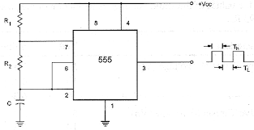
Multivibrador Astável (555)
Gera um sinal de onda quadrada contínua usado para temporização e oscilação.
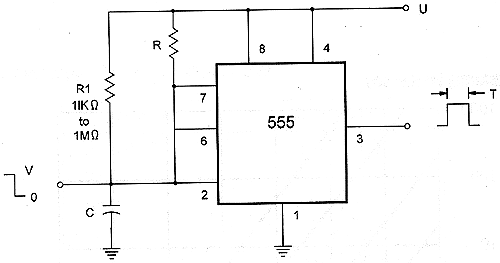
Multivibrador Monostável (555)
Produz um pulso único de duração fixa após ser acionado.
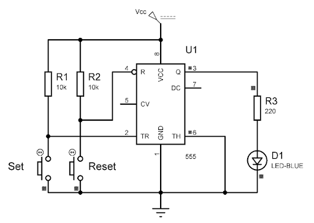
Multivibrador Bistável (555)
Possui dois estados estáveis e alterna entre eles mediante um gatilho.
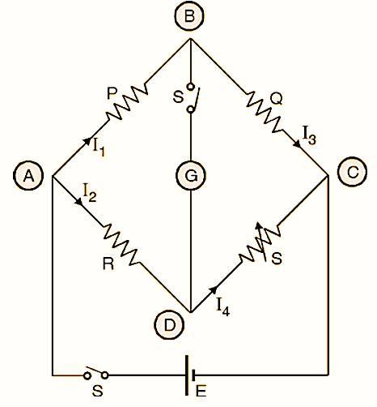
Ponte de Wheatstone
Circuito para medir resistências desconhecidas com alta precisão.
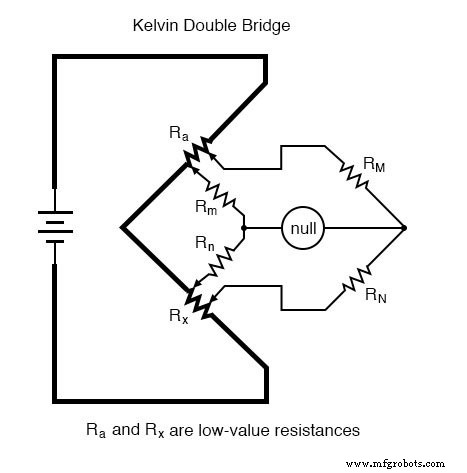
Ponte Dupla de Kelvin
Usada para medir baixas resistências com eliminação de erros causados por resistências de contato.
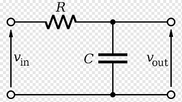
Filtro Passa-Baixa
Permite passagem de frequências baixas e atenua frequências altas.
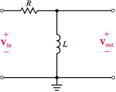
Filtro Passa-Alta
Permite passagem de frequências altas e atenua frequências baixas.
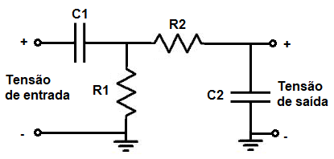
Filtro Passa-Banda
Permite passagem de um intervalo específico de frequências, rejeitando as demais.
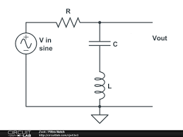
Filtro Notch (Rejeita-Banda)
Rejeita uma faixa estreita de frequências, deixando passar as demais.
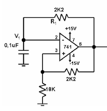
Oscilador de Relaxação
Gera sinais periódicos não senoidais, usados em temporizadores e piscadores.
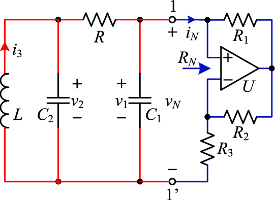
Circuito de Chua (Caótico)
Exemplo clássico de circuito não-linear que gera comportamento caótico.
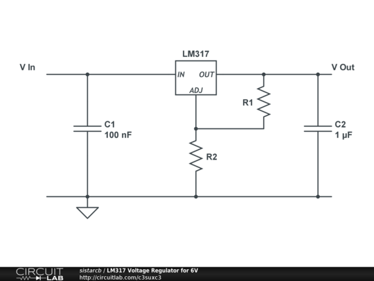
Fonte Regulada com LM317
Fonte de tensão ajustável que mantém a saída constante mesmo com variações na carga.
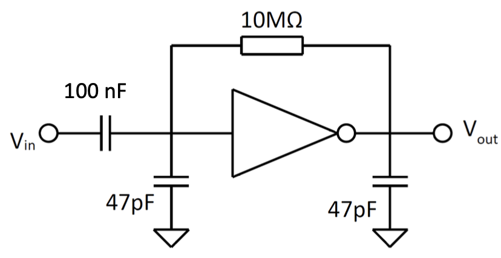
Amp Op Inversor
Amplificador operacional que inverte o sinal de entrada e amplifica sua amplitude.

Amp Op Não Inversor
Amplificador operacional que mantém a fase do sinal de entrada, amplificando-o.